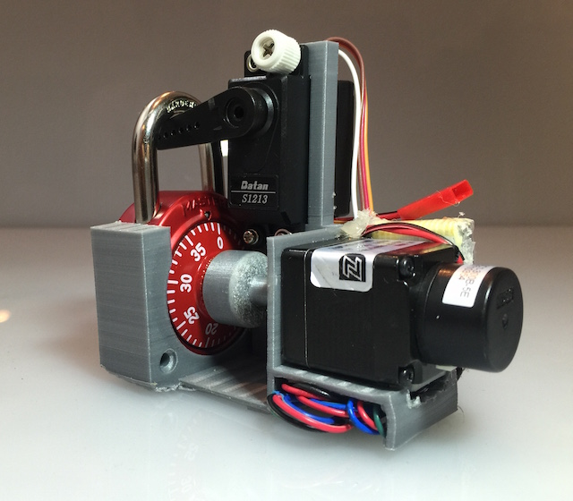
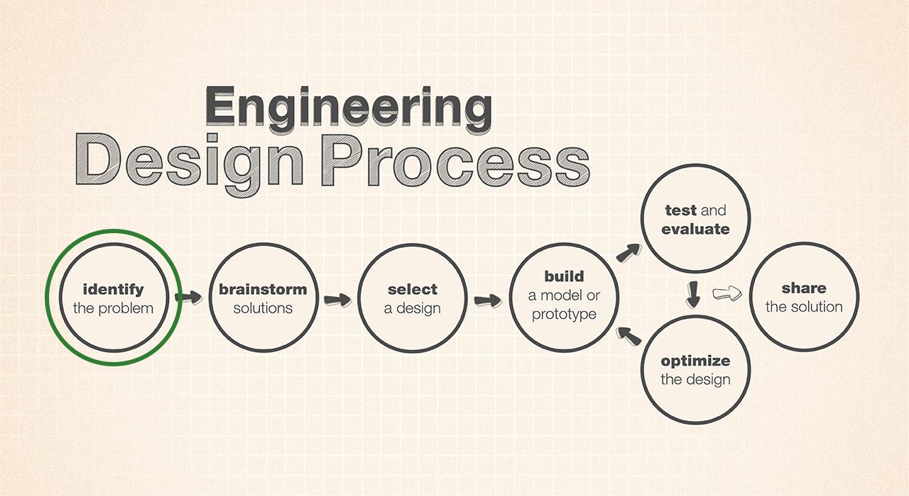
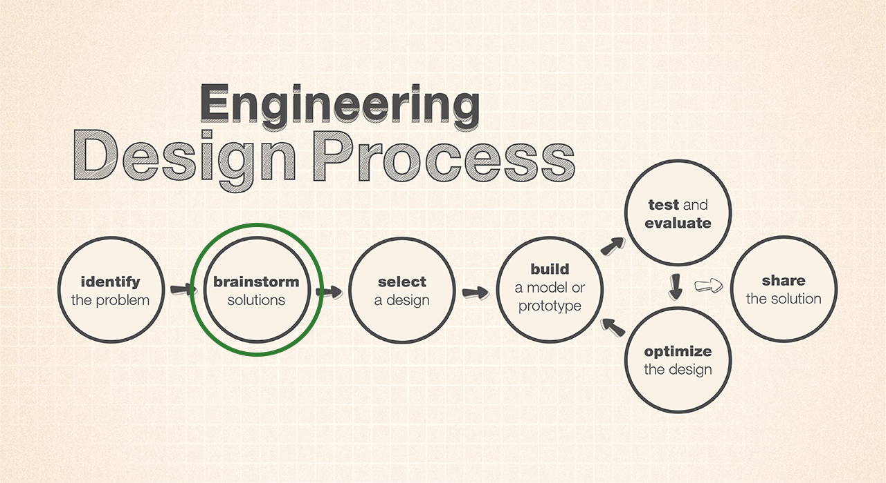
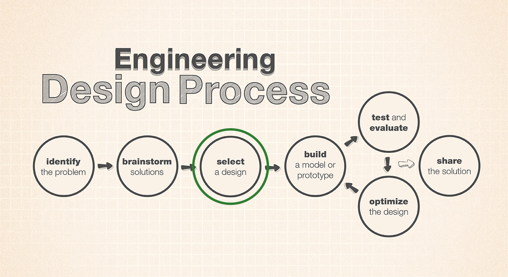
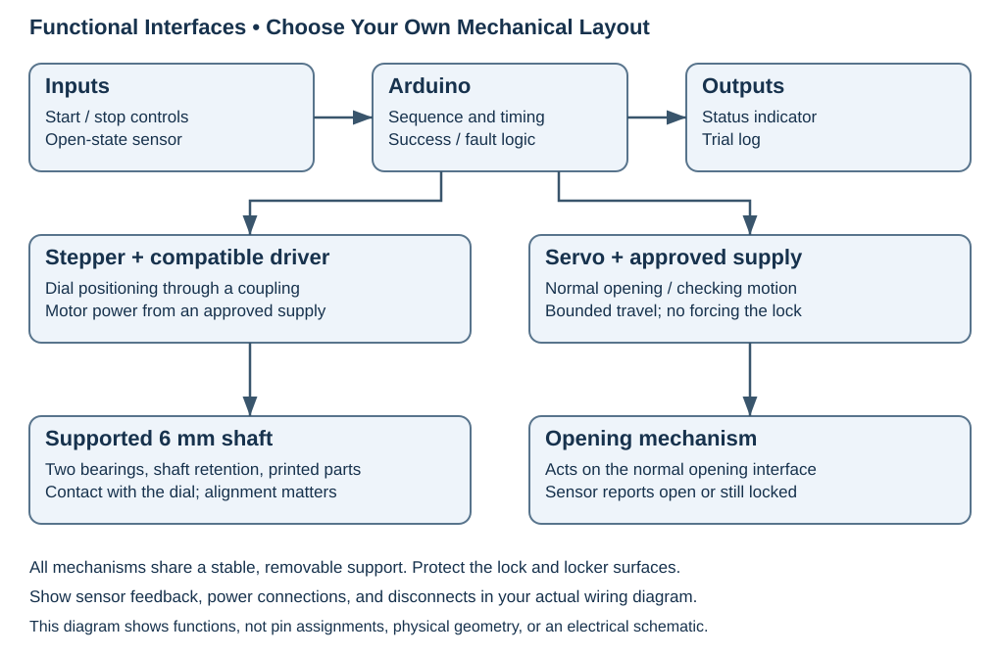
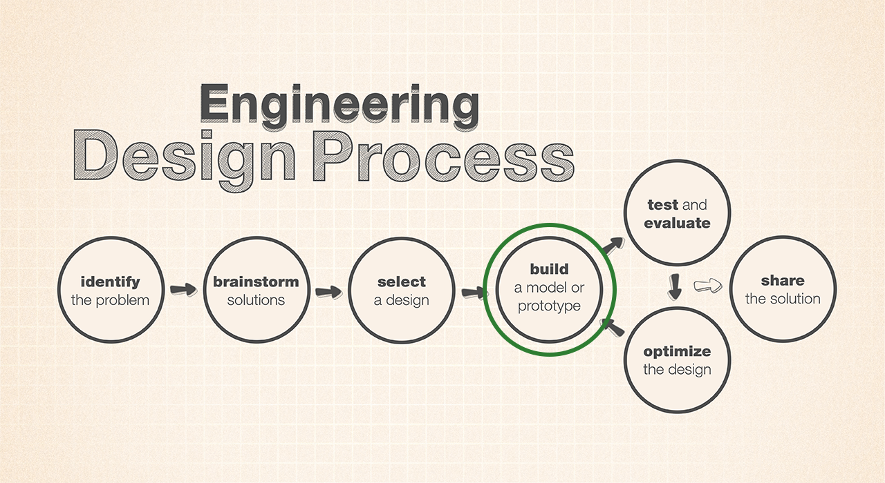
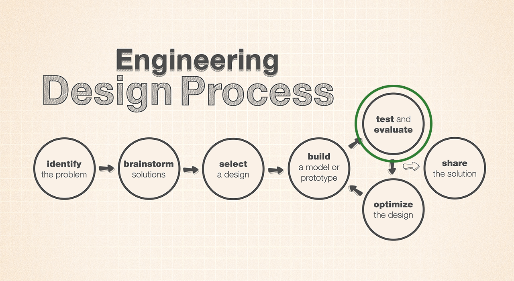
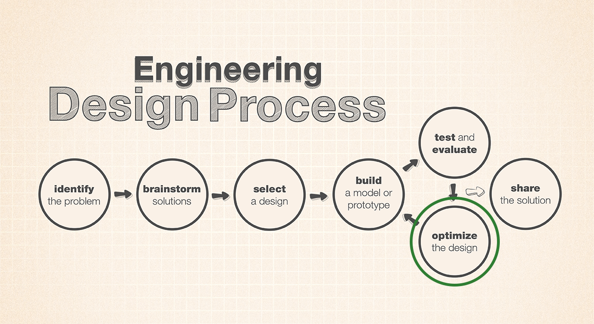
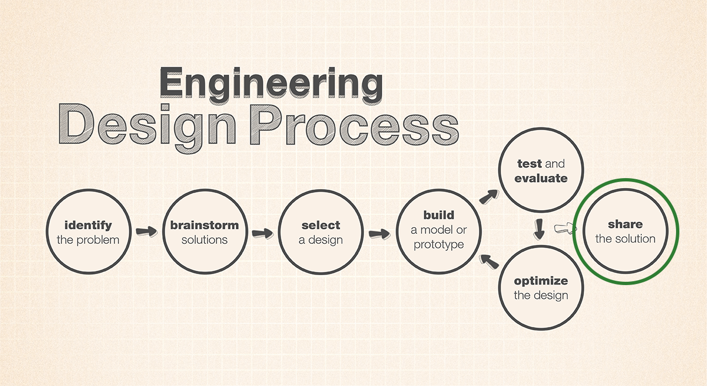

Padlock Auto Dialer Challenge

Combo Breaker auto dialer.1
Overview
In teams of three, build an auto dialer that unlocks a classroom locker without anyone touching the lock. Use Arduino control, stepper and servo motors, printed parts, shafts, and bearings. Follow all seven stages of the NASA/JPL Engineering Design Process (EDP)2, then compete to open one of the classroom lockers in the shortest total time, including device installation.
Before You Start
You should know basic Fusion modeling, safe 3D printing, Arduino inputs/outputs, and wiring diagrams. Plan for 12–15 class periods, plus printing. Before design begins, Mr. Willis will confirm the deadline, hardware, mounting area, supplies, filament allowance, and any changes to the competition rules.
Materials
- Teacher-designated combination padlock and empty challenge locker; a matching practice lock or practice fixture.
- Arduino, USB cable, stepper motor with a compatible driver, servo motor, and approved motor power supplies.
- 6 mm D-shafts, 696ZZ bearings, and fasteners.
- PLA, Fusion, calipers, and approved hand tools; follow the 3D-printing design rules.
- Removable padded supports, suitable couplings, and teacher-approved switches or sensors for reference position and open-state detection.
- Accessible motor-power disconnect; computer or approved start/stop controls.
Measure actual parts before modeling fits, including any coupling between the motor and 6 mm shaft.
You've got it when…
- Your machine meets the hardware and competition rules and opens the lock autonomously.
- You follow all seven EDP stages and complete the three individual notebook entries listed below.
- Your group supplies the drawing, Fusion assembly and parts, Arduino code, demonstration video, and wiring diagram.
Collaboration & AI
Keep individual notebook entries; credit shared work. Rotate design, programming/electronics, and testing/documentation roles. AIAS Level 1 — No AI: create your own designs, code, and explanations. Attributed references and manufacturer documentation are allowed. About AIAS levels.
Final Competition: Crack the Code
| Rule | Requirement |
|---|---|
| Target | An assigned padlock on one of the empty classroom lockers. The teacher checks, positions, relocks, and resets the lock between trials. |
| Hardware | Functional student-designed printed parts; a 6 mm shaft supported by at least two bearings; stepper-driven dialing; servo-operated opening/checking; Arduino coordination. |
| Contact | The machine may touch the dial, lock body, and opening mechanism. Students may not touch the lock directly or with handheld tools during setup or scored runs. |
| Mounting | Handle and mount your unpowered machine using approved padded, removable supports or a freestanding base. Stay within the mounting area; leave no damage or residue. |
| Installation | Start with the device assembled but not installed on or touching the lock/locker. At the judge’s signal, the clock starts and you may mount, align, and calibrate it. Installation counts toward your total time; there is no separate setup allowance. No manual dialing. |
| Qualification | Three consecutive autonomous openings with a supplied known combination. |
| Code-cracking challenge | Each group receives an assigned lock with an unknown combination. No candidate list is supplied: develop your own search strategy using your research. Do not obtain the code from records, people, or earlier attempts on that competition lock. |
| Timed run | One scored run per group. After installation, give one command to start autonomous operation; from then on, no human adjustments, typing, or assistance. The clock runs continuously from installation through opening. Tethered power and automatic logging are allowed. |
| Finish | Time stops when the lock opens normally and releases the locker, confirmed by the judge. The machine must detect opening, stop, signal success, and record the successful dialed combination. Swinging the door open is unnecessary. |
| Stop | Stop on success, the announced time limit, search exhaustion, an unsafe condition, or operator stop. An assisted, interrupted, or unsuccessful run is recorded as did not finish. |
| Winner | Shortest total installation-to-opening time wins. Equal recorded times tie. Groups that do not finish receive no speed ranking. Competition placement is separate from the project grade. |
Mr. Willis randomly assigns competition locks of the same model and announces the common time limit before building begins, based on a pilot test that includes installation. Everyone receives the same dial starting condition. Competition combinations differ from practice combinations and remain unknown to students. Different lock models compete in separate divisions; code assignment can affect search time.
Identify the Problem

-
Start an Auto Dialer Challenge notebook entry. In your own words, state the user, task, success criteria, rules, deadline, equipment, and resource limits.
-
Observe the teacher operating the practice lock. Record its model-specific dialing directions, turns, index mark, and opening motion. Sketch the mounting area and measure clearances without operating the challenge lock.
-
Find prior art—existing designs and published work. Locate three resources beyond the sample video, from at least two independent creators. Include another working auto dialer and information about the relevant lock mechanism or weaknesses. Use original build videos, project write-ups, repositories, patents, or manufacturer documentation where possible.
-
Complete the research table below. Identify useful ideas, proposed changes, and missing evidence. Credit borrowed ideas, drawings, and code; check licenses before reusing files.
Source / creator / link Timestamp, figure, or section Mechanism or claim Evidence and lock model Useful idea / limitation / proposed adaptation -
Investigate weaknesses in the lock design that can help you solve the problem faster. How many possible combinations can be made from the numbers painted on the dial? How many combinations are there really? See Recovering Master Lock Combinations (PDF).
-
Set measurable targets and tests for dial positioning, support/alignment, opening force, detection, power, and stopping. Include repeatability and slipping.
Brainstorm Solutions

-
Each member sketches a different concept. Label printed parts, shafts, bearings, motors, mounting, and opening detection. Show hands-off installation; credit adapted ideas and explain your changes.
-
Compare concepts for backlash (lost motion when direction reverses), slipping, flex, and misalignment. Propose a quick experiment to resolve an uncertainty before a large print.
Select a Design

-
Score each concept from 1 (weak) to 4 (strong), giving brief reasons. Reject rule violations. Choose a design; explain its tradeoff, supporting research/test evidence, and remaining assumptions.
Concept Reliable dialing Removable mounting Reliable opening/detection Practical to build Total / 16 A B C -
Create individual Fusion Part Design files and an Assembly Design file with functional joints. Make a dimensioned 2D drawing on the NPA drawing template; save the drawing and design files in your Fusion group folder. Create a hardware-specific wiring diagram and plan the control sequence. Show bearings, shaft retention, couplings, clearances, cable routing, power, and stopping. The diagram below shows functions, not a required layout or wiring schematic.

-
Assign roles and milestones: component tests, assembly, qualification, improvement, and competition. Get Mr. Willis’s check of rules, mounting, and electrical plans before fabrication or powered testing.
Build a Model or Prototype

-
Print small shaft, bearing, and dial-contact fit samples before the full assembly. Record dimensions, fit, and revisions. Align bearings and retain the shaft axially; do not support the mechanism on the motor shaft alone.
-
Test motors separately, away from the lock, following their documentation. Establish repeatable reference positions and safe travel limits. Record driver settings and measured motion—not just commanded steps.
-
Write functions for referencing, positioning, normal dialing, checking/opening, and stopping. Follow the practice lock’s operating sequence. Implement your search strategy, track attempts, and record the successful dialed combination. Detect opening; stop on success, search exhaustion, or timeout. Test operator stopping during each motion.
-
Assemble on the practice fixture. Check alignment and clearance unpowered, then test slowly. Record photos, CAD/code versions, and the actual wiring.
Test and Evaluate

-
Plan tests for unloaded positioning, normal dial load, and a known combination. Check reference drift after reversals and repeated cycles. Measure commanded versus actual position and explain your method. Compare error with the lock’s observed acceptance range; distinguish lock tolerance from machine errors and update your research findings.
-
Test detection with the lock open and still locked. Check for excessive force, false success signals, missed detections, and correct stop/timeout behavior.
-
Run three baseline trials under consistent conditions, starting with the device uninstalled. Record installation and total time, including failures. Calculate success rate (openings ÷ trials); compare times only for successful openings.
Version / trial Known-code or search test Candidates attempted Installation / total time (s) Opened? Detected correctly? Slip, jam, stop, or other observation Baseline / 1 Baseline / 2 Baseline / 3 Revised / 1 Revised / 2 Revised / 3
Optimize the Design

-
Choose one improvement from the baseline evidence. State the change, expected benefit, and measurement. A working machine can improve reliability, setup, material use, or speed while remaining safe.
-
Revise, rebuild, and run at least three comparable trials. Keep the lock, starting conditions, and measurements consistent. Keep the search order fixed unless it is the change being tested. Compare with baseline, decide whether to retain the change, and document failures. Repeat as needed.
Share the Solution

-
Complete qualification, then compete in the final timed code-cracking event. Start with your device uninstalled on the classroom locker. Record your official total time or did-not-finish result, attempts, and successful dialed combination if found. Capture a short video showing the opening and success/stop indication. If incomplete, demonstrate working subsystems and explain the failure using evidence.
-
Present for 3–5 minutes using diagrams and data. Explain prior-art influences, lock findings, your design, a mechanical/electrical interface, a tested revision, and limitations. Each member explains a contribution and answers a design question.
Turn It In
- Submit the items below through the class assignment. Keep the drawing and Fusion design files in your Fusion group folder.
Notebook entries (individually)
- The table from step 4.
- Your concept sketch from step 7.
- Your concept scoring table from step 9.
Deliverables (one of each per group)
- 2D drawing on the NPA drawing template in your Fusion group folder.
- Fusion Assembly Design file with functional joints, built from individual Part Design files, in your Fusion group folder.
- Arduino code (
.inofile). - Video of a working device demonstration.
- Wiring diagram.
How It's Graded
One overall score reflects the project evidence and your individual contribution, not race placement.
| Score | Observable evidence |
|---|---|
| 4 — Excellent | All three individual notebook entries are complete and supported by research and design reasoning. The group drawing uses the NPA template; the Fusion assembly uses individual Part Design files and functional joints. Code, wiring diagram, and video agree with the working, rule-compliant device. |
| 3 — Above Average | All listed turn-ins are present and the device works, with minor errors in the notebook entries, drawing, assembly/joints, code, or wiring diagram. |
| 2 — Average | Meaningful work is evident, but the device works unreliably or important listed turn-ins are missing or have significant errors. |
| 1 — Below Average | The device is largely incomplete or nonfunctional, with major gaps in the listed notebook entries and group deliverables. |
| 0 — Failing | No submission or assessable evidence. |
-
Image source: Combo Breaker photograph, sa.my. ↩
-
Diagrams: NASA/JPL-Caltech, Engineering Design Process Flow Chart. Green circles added for this lab. ↩